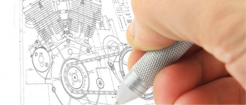
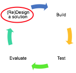
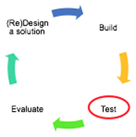

What You Should Know - Arckit: Design and Measure Community Spaces
 Important Vocabulary
Important Vocabulary
- Equation - a statement showing that the values of two mathematical expressions are equal
- Multiplication - repeated addition that results in a product
- Scaling/Scale - drawing or making a copy of something in smaller (or larger) sizes
- Architecture - the design of a building
- Proportional - when two things are comparable in size
- Engineering Design Process - is the steps professionals (like engineers) follow to design the best solutions for the problems they are trying to solve
Architecture
Architecture is the design and construction of buildings. A person who designs buildings is called an architect.
Architects:
- Gather information about the requirements for the building they are designing.
- Understand what materials work best for different purposes.
- Use math to create a drawing of the building so a contractor can build the structure.
Are you interested in learning more about architecture? Check out this article from Brittanica Kids.
Engineering Design Process
How will you improve a machine?
The Engineering Design Process is the steps professionals (like engineers) follow to design the best solutions for the problems they are trying to solve.
It starts by finding a problem to solve and then learning more about that problem. After some research, they enter into the design cycle, where they design a solution, build it, test it, evaluate it, and then do it again and again to improve the design.

Design Cycle
Select each item to learn more.
1. Design
Making a design is the first step in the design cycle and in creating a new building.
Designs:
- Usually include drawings of the building with measurements of each wall, window, door, and floor.
- Include steps for building the foundation (floor), walls, roof, and interior (inside the building).
- Include a list of all the parts needed.
 
2. Build
The design is used to construct the building. The builder and the architect work together to turn the architect's idea or vision into a constructed building.
Builders:
- Collect the materials needed for construction.
- Carefully follow the design as they measure and build.


3. Test
After a building is designed, architects create a smaller or scale model to ensure their design will work.
Testing includes:
- Designing a scale model.
- Completing the scale model.
- Collecting observations about how it looks and works.
- Analyzing the observations to make changes.
For example, if the goal is to design a building that fits in a 500 x 800-foot space and the building doors would be blocked by the office next door, the design will need to change.

4. Evaluate
To evaluate means to review or compare the data to understand how the design works.
Evaluating observations helps answer questions like the ones below:
- How did the model look?
- Will the model work for all people? What changes in the design will make the building easier to enter for all?
- Think about the height and width of ceilings and door openings. Will a person in a wheelchair be able to get into the building?
- How will people get into and out of the building? How will they move throughout?
- What can be done to make the design better?
The design cycle is a cycle, meaning it repeats. If the evaluation shows that design improvements need to be made, the entire four-step cycle can be repeated as often as needed.
Measurement
There are many ways to measure. One way is to use a ruler. Using a ruler will help you find the length of an object or its dimensions. First, decide what unit of measure you will use, such as inches. Next, line the object up to the ruler starting at 0.
For example, look at the pencil. The pencil goes from 0 to 10 on the ruler. It is 10 inches long.
What if the pencil did not measure at an exact whole number, like 10, but stopped between two whole numbers instead? In such a case, rounding is needed.
For our purposes, we could round the measurement to the nearest whole number. If the length of an object stops less than halfway between two whole numbers on the ruler, round down to the nearest whole number. If the length of an object stops halfway or more between two whole numbers on the ruler, round up to the nearest whole number.
However, you should know that architects and builders need to be extremely precise, so they may round to the nearest 1/16 inch. Imagine if you needed to install a window and the builder rounded up half an inch when cutting the glass to size; the window may not even fit in the opening! Or if the builder rounded down half an inch, there could be a gap that would let the air and elements into your home. So the amount we round depends on the situation, but in any case, some rounding may be necessary.
Using Multiplication to Compare
As you may already know, architects use a lot of math in their work. Multiplication is just one of the many math concepts they use. Multiplication is what you use to find the product of two numbers.
But do you know how you can use multiplication to compare? To think of multiplication as a comparison, you use these phrases:
- Times as many
- Times more than
- Times as much
- Times as large
Try to solve this multiplicative comparison question, which is a comparison that can be solved with multiplication: How can we represent 5 times as many as 4?
Here is 4:
We need 5 times as many as 4. We can make a tape diagram to help us visualize this.
We will place 5 tiles of 4 side by side. This allows us to see what 5 times as many as 4 equals.
5 groups of 4 equal 20
5 x 4 = 20
We can say 20 is 5 times as large as 4.
When architects and designers create, they use multiplication to figure out the dimensions of their buildings, and multiplicative comparisons to determine how large to construct the scale models. They need to . They also use multiplication when determining the amount of building materials they need.
Scaling and Proportional Measures
One important piece of the design process is scaling. Scaling allows the architect to build a much smaller model of their building design to show owners. This way, they can change different aspects of the building before it is built. Once a design is approved, they will reference the specs or model to build a larger building.
When scaling, you need to make sure that our dimensions are proportional in size. This means that all dimensions are scaled using the same factor. Imagine that you construct a building model to show your clients for approval. Its footprint is 5 inches by 4 inches. They approve of the design, and ask you to build a larger model to put on display; they want you to increase the size by a factor of 10. How would you calculate the size of this new, larger model?
First, you would have to find out how much larger each side of the shape is if it is 10 times larger.
This rectangle has a length of 5 inches and a width of 4 inches. First, we find out what is 10 times larger than 5.
10 groups of 5 equal 50
10 x 5 = 50
We can say 50 is 10 times as large as 5.
Next, look at the width.
We need to figure out what is 10 times as large as 4.
10 groups of 4 equal 40
10 x 4 = 40
Therefore, 40 is 10 times as large as 4.
Summary of Steps
When you design and construct your community space, you will follow these steps to find the measurements of your model, and then determine the measurements of your larger display model. This summary brings together all of the math skills you have learned so far.
In real life, architects decide on the size of the building and then scale down to figure out the size of any models. In this exercise, we are scaling up from a small model to a larger model, but the general skills are similar.
- Measure your model. Measure the width and the length of the footprint.
- Decide on how large you want the display model to be. 6 times as large 10 times larger? 20 times larger?
- Write this down as a multiplicative comparison statement. For example, “The display model is 14 times as large as the original scale model.”
- Multiply the width and length of your model by the factor you chose.
- If you want the display model to be 10 times the size of your model, you will multiply the width by 10 and the length by 10.
- For example, if the scale model is 6 in. in width and 2 in. in length, the building would be 2 x 10 = 20 inches in length and 6 x 10 = 60 inches in width.
Career Connection and Real-World Application
Architect/Building Designer
Architects and building designers use scale drawings, models, and multiplication for their jobs. As you have learned in this lesson, the ability to make a model or scale drawing helps architects’ and designers’ clients see a building or space in a smaller version. This is a key part of the design process. The ability to scale down a plan using precise measurements is very important. This allows clients to really get a feel for a future building.

Clothing/Dress Designer
Dress designers also use scale drawings when designing their creations. They first make small drawings that show their ideas. These drawings have dimensions listed to help make the real-life clothing.